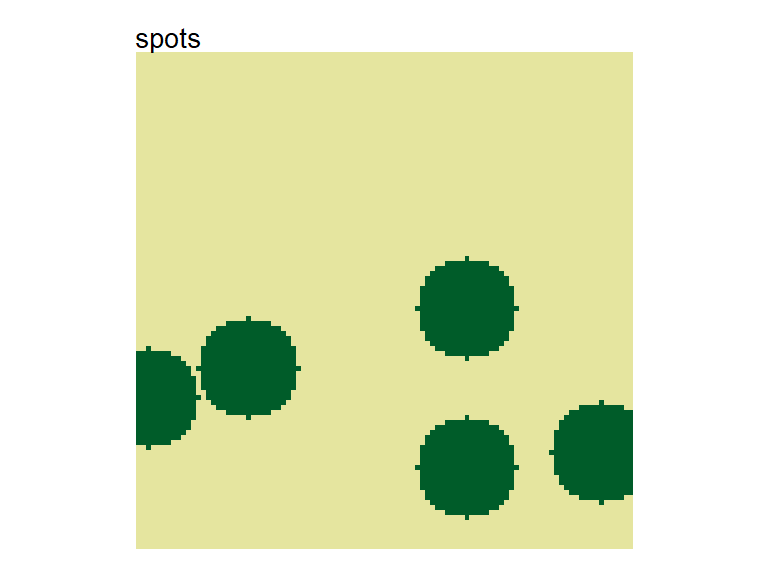
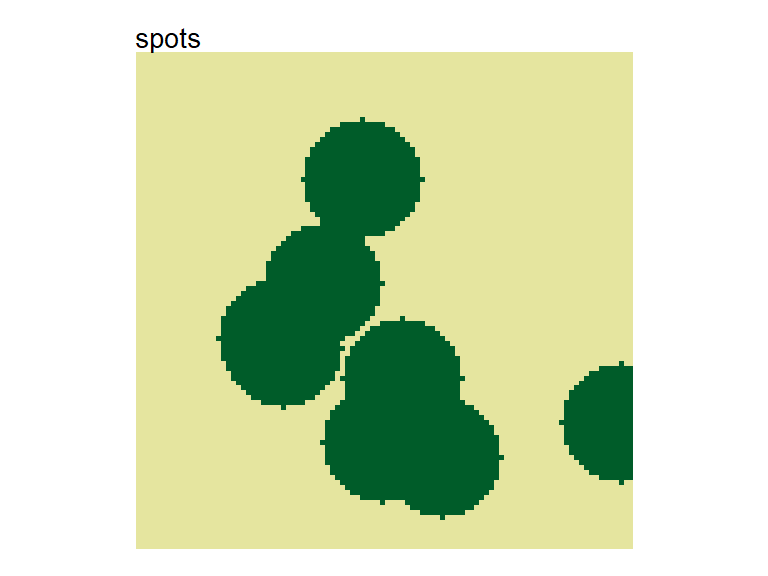
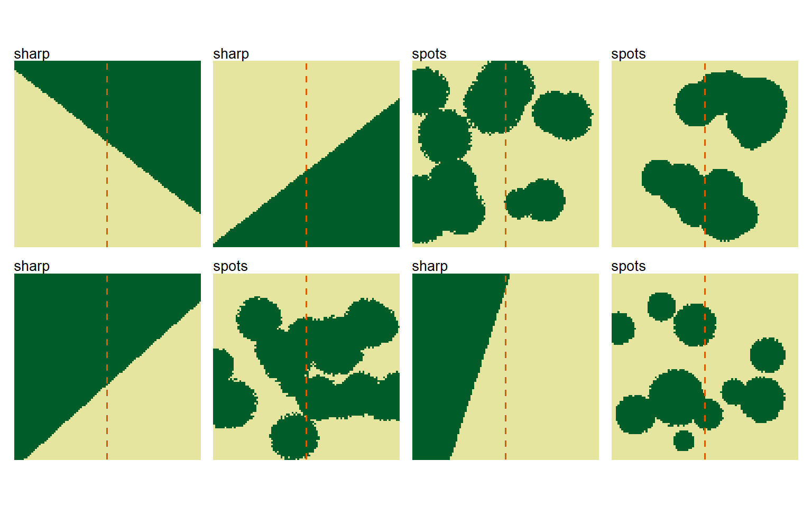

library(patternscaper)
# Set once for reproducible examples
set.seed(123456)Create single artificial landscapes or landscape batches with known spatial patterns for training and testing classifiers. If you are new to the package, begin with Get started for an overview of the complete classification workflow.
Overview
Landscape creation uses three kinds of functions:
-
create_landscape()creates one landscape -
create_landscapes()creates a batch of landscapes -
pattern_*()constructors set pattern-specific parameters
In these names, * is replaced by the corresponding pattern name.
Choose a pattern
The package provides 11 spatial patterns in three groups: control, ecotone, and patch patterns. See the pattern gallery to compare them and explore their parameters.
Create individual landscapes
To create a single landscape using default parameter settings, call create_landscape() with the name of the pattern:
default_spots <- create_landscape("spots")
# Plot the landscape
plot_landscapes(default_spots, show_legend = FALSE)
Pass a matching pattern_*() constructor to params to modify the default parameters (see pattern gallery for all patterns and parameters):
big_spots <- create_landscape(
"spots",
params = pattern_spots(n_spots = 8, spot_radius = 12)
)
plot_landscapes(big_spots, show_legend = FALSE)
Create training landscapes
The quickest way to create training data is create_landscapes(). It creates multiple landscapes, distributes them as evenly as possible across the selected patterns, and varies their parameters between landscapes.
The following example creates only 20 landscapes to keep the guide quick to run. For training the actual classifiers, the data set should be larger.
# Create 20 landscapes distributed across all pattern types
landscapes <- create_landscapes(n = 20)
#> ✔ Successfully generated all 20 training landscapesThe result is a list of landscape objects.
Plot them with plot_landscapes():
# Plot all landscapes
plot_landscapes(landscapes)
By default, landscapes are distributed as evenly as possible across the selected pattern types. When the number of landscapes is not divisible by the number of patterns, some patterns occur once more than others.
Inspect the number of generated patterns with table():
Select specific patterns
You can select only specific patterns using the patterns argument. For example, to create landscapes with only labyrinth, spots, and clustered patterns:
# Generate only specific patterns
landscapes <- create_landscapes(
n = 12,
patterns = c("labyrinth", "spots", "clustered")
)
#> ✔ Successfully generated all 12 training landscapes
plot_landscapes(landscapes)
Landscape size
To modify the size (number of pixels in x- and y-direction) of all generated landscapes, use the width and height arguments. By default, landscapes are created with a size of 100 x 100 pixels.
non_square <- create_landscapes(
n = 3,
width = 50,
height = 20
)
#> ✔ Successfully generated all 3 training landscapes
# Plot landscapes with custom size
plot_landscapes(non_square)
Landscape rotation
By default, each rotatable pattern is rotated by a whole-degree angle sampled between 0 and 360. This exposes classifiers to similar landscapes in different orientations during training and helps prevent them from relying on orientation.
Set rotation = 0 to disable rotation, or supply a length-2 range from which angles are sampled. This example uses angles between 45 and 90 degrees:
no_rotation <- create_landscapes(
n = 3,
patterns = c("clustered", "sharp", "bands"),
rotation = 0
)
defined_angles <- create_landscapes(
n = 3,
patterns = "clustered",
rotation = c(45, 90)
)
plot_landscapes(c(no_rotation, defined_angles))
Only “sharp”, “diffuse”, “fingers”, “clustered” and “bands” are rotated. The remaining patterns ignore rotation.
Pattern-specific parameters
The params_list argument sets pattern-specific parameters or parameter ranges using the pattern_*() constructors. In create_landscapes(), a batch parameter can be either a length-2 range to sample the parameter from or a single value used for all landscapes of that pattern. Patterns left out of params_list fall back to their default sampling ranges, which are listed on each constructor’s help page.
changed_parameters <- create_landscapes(
n = 12,
patterns = c("spots", "sharp"),
params_list = list(
spots = pattern_spots(
n_spots = c(10, 20), # range for each landscape
spot_radius = c(8, 12), # range for each landscape
spot_radius_sd = 3, # single value for all landscapes
regular_spots = FALSE # single value for all landscapes
),
sharp = pattern_sharp(
boundary_position = c(0.2, 0.7)
)
)
)
plot_landscapes(changed_parameters)
Landscape objects
create_landscape() returns one landscape object and create_landscapes() returns a list of them. Downstream functions that work with landscapes accept these objects directly.
Each landscape contains:
-
data: landscape raster as aSpatRaster -
pattern: pattern label, such as"spots"or"clustered" -
name: user-defined name -
params: parameters used to generate the landscape
To convert your own matrices or rasters to this format, see Import user-defined landscapes.
Customize landscape plots
plot_landscapes() accepts either one landscape or a list of landscapes. Use its arguments to control titles, legends, the number of columns, and which landscapes are shown.
See ?plot_landscapes for all available arguments.
landscape_plot <- plot_landscapes(
changed_parameters,
titles = "pattern",
show_legend = FALSE,
ncol = 4,
max_landscapes = 8
)
#> Warning: Showing the first 8 of 12 landscapes. Increase `max_landscapes` to show more,
#> or use `subset_index` to select landscapes.
landscape_plotThe function returns a patchwork object, which combines several ggplot2 plots. Use & to add the same ggplot2 layer to every panel. With multiple landscapes, + modifies only the last panel. Here, a vertical sampling transect is added at x = 50.
landscape_plot &
ggplot2::geom_vline(
xintercept = 50,
color = "#D55E00",
linetype = "dashed",
linewidth = 0.6
)
Next steps
- Calculate landscape metrics: Extract landscape features and identify informative metrics
- Classify with landscape metrics: Train classifiers on landscape metrics
- Classify with pixels: Train Keras classifiers on raster-cell values